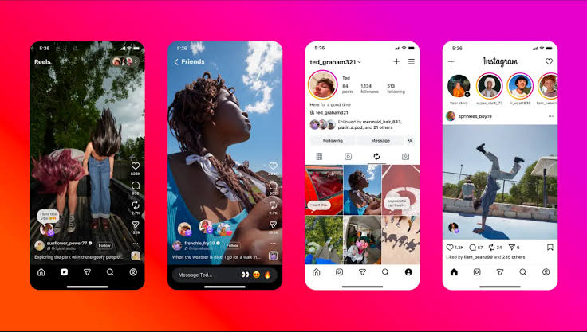

Memes, Virality, and Influencers
In today’s digital world, content spreads faster than ever. Platforms like Facebook, TikTok, Instagram, YouTube, X, and Reddit allow ideas, trends, and personalities to reach millions within hours.